WireGuard
WireGuard is an extremely simple yet fast and modern VPN that utilizes state-of-the-art cryptography.
Here's what it will look like:
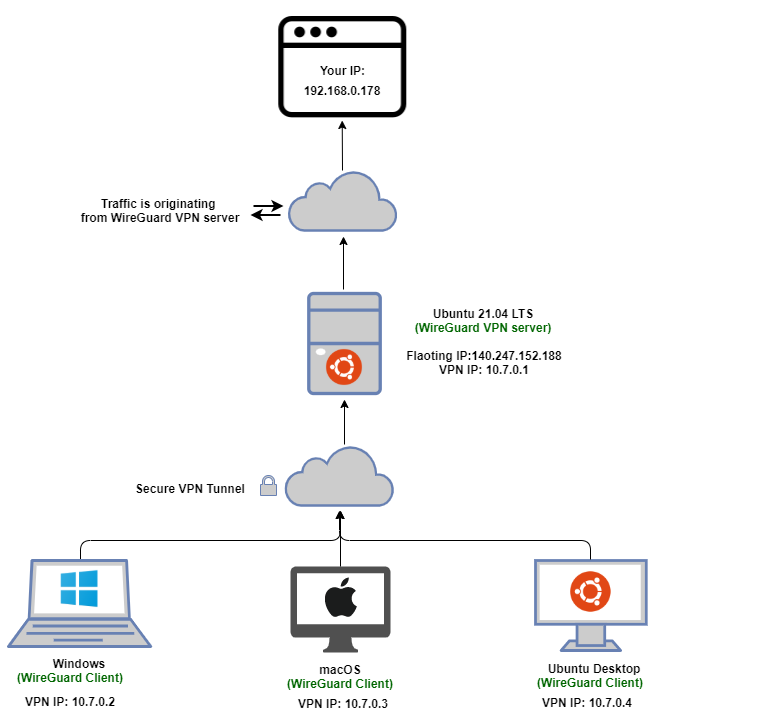
Installing WireGuard Server
You can spin up a new instance with "ubuntu-22.04-x86_64" or any available Ubuntu OS image, named "wireguard_server" on OpenStack, with "default" and "ssh_only" Security Groups attached to it.
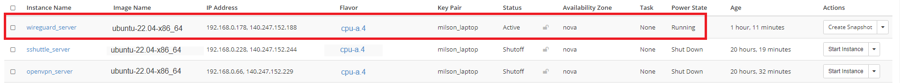
Also, attach a Floating IP to this instance so you can ssh into it from outside.
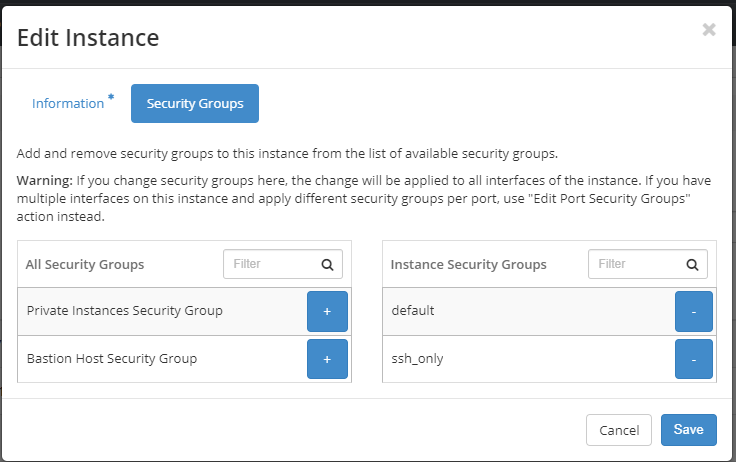
Finally, you'll want to configure the setting for the remote instances in your
SSH configuration file (typically found in ~/.ssh/config). The SSH
configuration file might include entry for your newly create WireGuard server
like this:
Host wireguard
HostName 140.247.152.188
User ubuntu
IdentityFile ~/.ssh/cloud.key
-
Then you can ssh into the WireGuard Server running:
ssh wireguard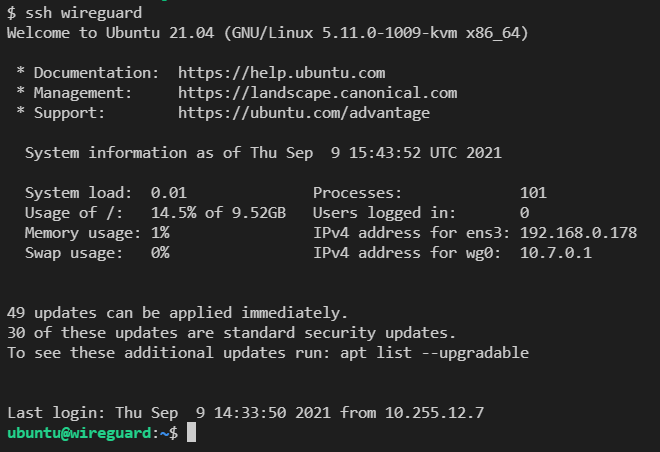
-
Also note that WireGuard must be installed and run by a user who has administrative/root privileges. So, we need to run the command:
sudo su -
We are using this repo to install WireGuard server on this ubuntu server.
For that, run the script and follow the assistant:
sh wget https://git.io/wireguard -O wireguard-install.sh && bash wireguard-install.sh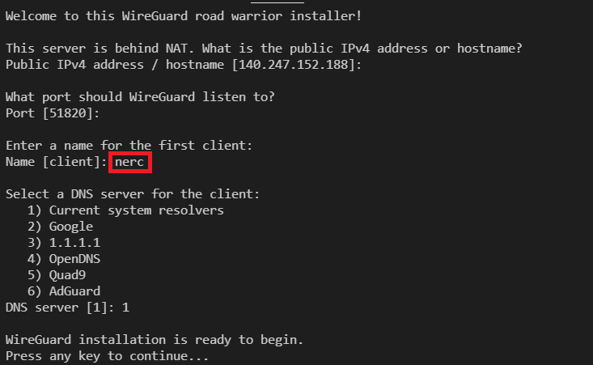
You can press Enter for all default values. And, while entering a name for the first client you can give "nerc" as the client name, this will generate a new configuration file (.conf file) named as "nerc.conf". Based on your client's name it will name the config file as "
.conf "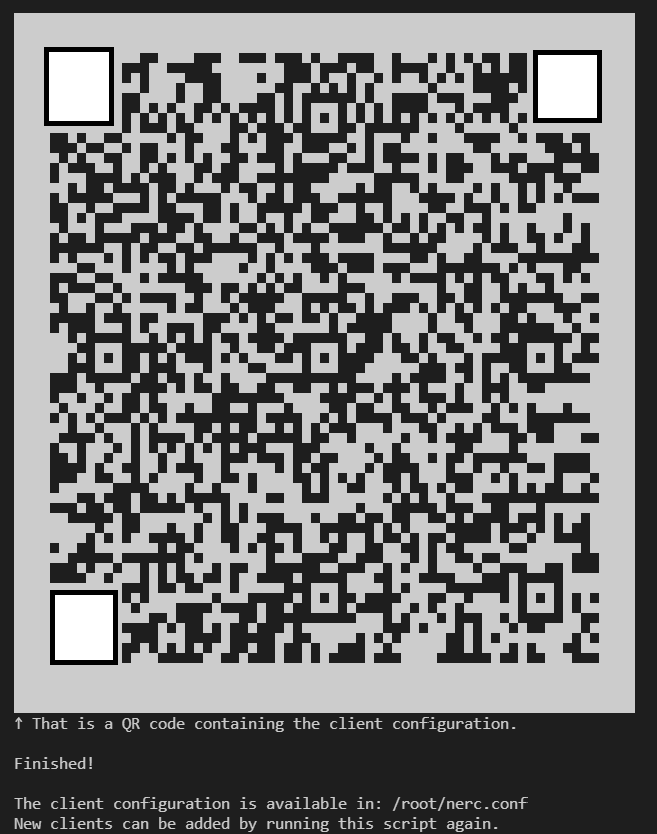
Note: For each peers the client configuration files comply with the following template:
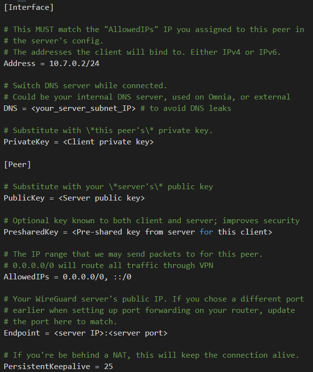
-
Copy the generated config file from "/root/nerc.conf" to "/home/ubuntu/nerc.conf" by running:
cp /root/nerc.conf . -
Update the ownership of the config file to ubuntu user and ubuntu group by running the following command:
chown ubuntu:ubuntu nerc.conf -
You can exit from the root and ssh session all together and then copy the configuration file to your local machine by running the following script on your local machine's terminal:
scp wireguard:nerc.conf .
To add a new client user
Once it ends, you can run it again to add more users, remove some of them or even completely uninstall WireGuard.
For this, run the script and follow the assistant:
wget https://git.io/wireguard -O wireguard-install.sh && bash wireguard-install.sh
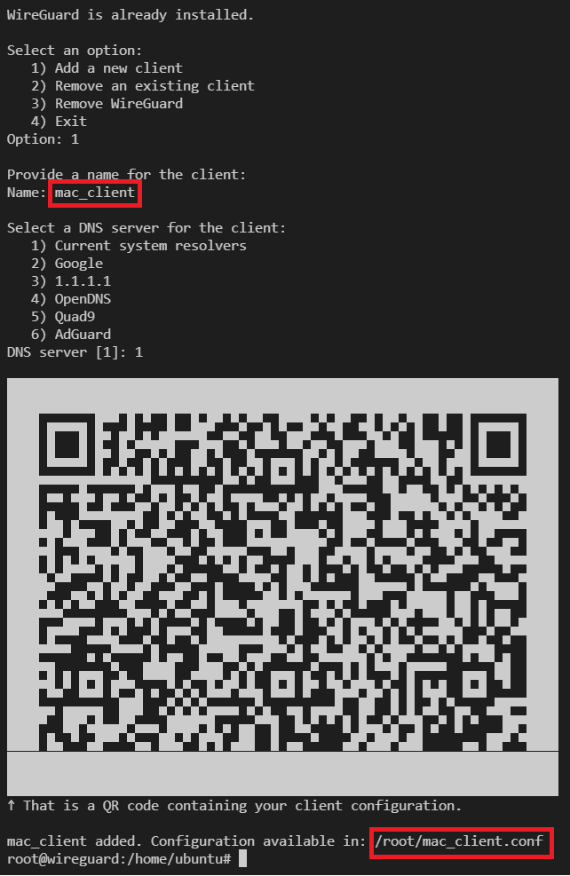
Here, you are giving client name as "mac_client" and that will generate a new configuration file at "/root/mac_client.conf". You can repeat above steps: 4 to 6 to copy this new client's configuration file and share it to the new client.
Authentication Mechanism
It would be kind of pointless to have our VPN server allow anyone to connect. This is where our public & private keys come into play.
- Each client's **public** key needs to be added to the SERVER'S configuration file
- The server's **public** key added to the CLIENT'S configuration file
Useful commands
To view server config: wg show or, wg
To activateconfig: wg-quick up /path/to/file_name.config
To deactivate config: wg-quick down /path/to/file_name.config
Read more:
https://git.zx2c4.com/wireguard-tools/about/src/man/wg.8
https://git.zx2c4.com/wireguard-tools/about/src/man/wg-quick.8
Important Note
You need to contact your project administrator to get your own WireGUard configuration file (file with .conf extension). Download it and Keep it in your local machine so in next steps we can use this configuration client profile file.
A WireGuard client or compatible software is needed to connect to the WireGuard VPN server. Please install one of these clients depending on your device. The client program must be configured with a client profile to connect to the WireGuard VPN server.
Windows
WireGuard client can be downloaded here. The WireGuard executable should be installed on client machines. After the installation, you should see the WireGuard icon in the lower-right corner of the screen located at the taskbar notification area.
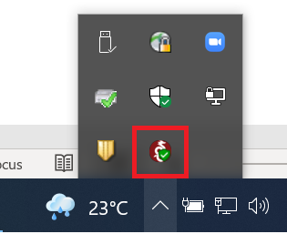
Set up the VPN with WireGuard GUI
Next, we configure the VPN tunnel. This includes setting up the endpoints and exchanging the public keys.
Open the WireGuard GUI and either click on Add Tunnel -> Import tunnel(s) from file… OR,
click on "Import tunnel(s) from file" button located at the center.
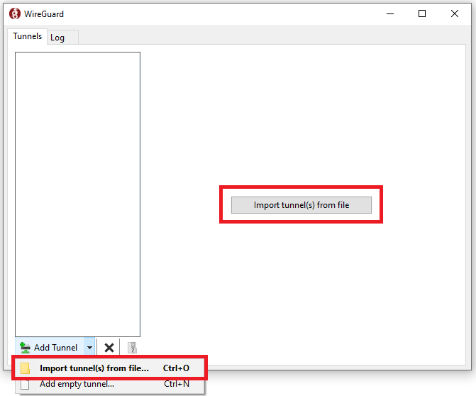
The software automatically loads the client configuration. Also, it creates a public key for this new tunnel and displays it on the screen.
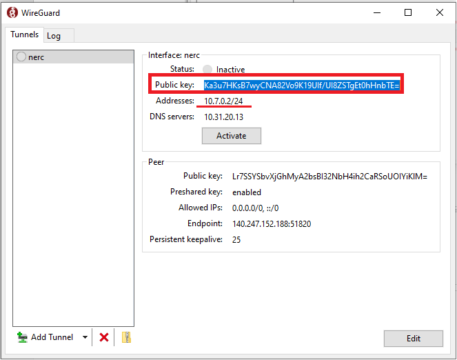
Either, Right Click on your tunnel name and select "Edit selected tunnel…" menu OR, click on "Edit" button at the lower left.
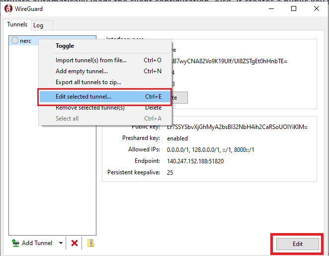
Checking Block untunneled traffic (kill-switch) will make sure that all your traffic is being routed through this new VPN server.
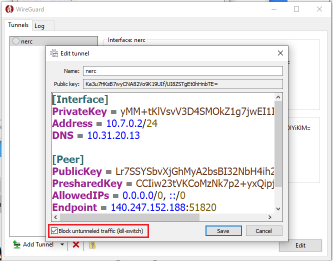
Test your connection
On your Windows machine, press the "Activate" button. You should see a successful connection be made:
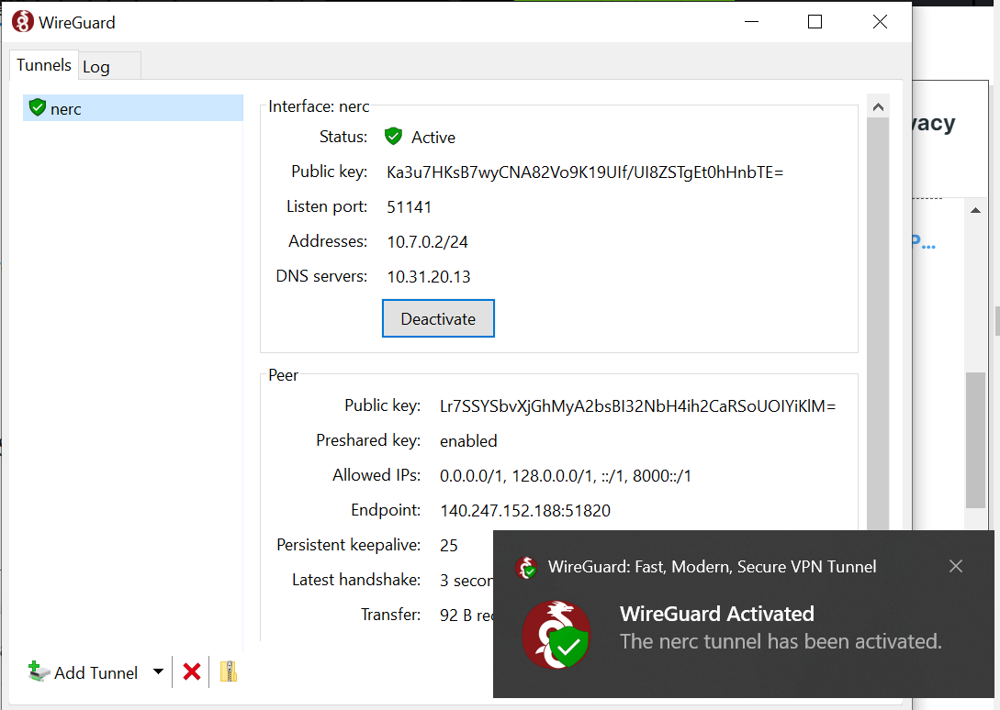
After a few seconds, the status should change to Active.
If the connection is routed through the VPN, it should show the IP address of the WireGuard server as the public address.
If that's not the case, to troubleshoot please check the "Log" tab and verify and validate the client and server configuration.
Clicking " Deactivate" button closes the VPN connection.
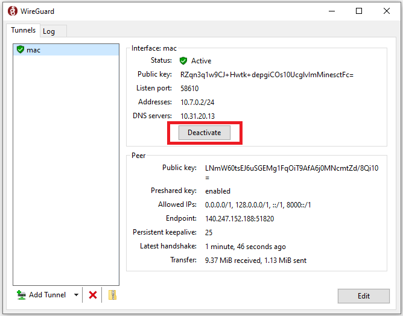
Mac OS X
I. Using HomeBrew
This allows more than one Wireguard tunnel active at a time unlike the WireGuard GUI app.
-
Install WireGuard CLI on macOS through brew:
brew install wireguard-tools -
Copy the ".conf" file to "/usr/local/etc/wireguard/" (or "/etc/wireguard/"). You'll need to create the " wireguard" directory first. For your example, you will have your config file located at: " /usr/local/etc /wireguard/mac_client.conf" or, "/etc/wireguard/mac_client.conf"
-
To activate the VPN: "wg-quick up [name of the conf file without including .conf extension]". For example, in your case, running
wg-quick up mac_client- If the peer system is already configured and its interface is up, then the VPN connection should establish automatically, and you should be able to start routing traffic through the peer.
Use wg-quick down mac_client to take the VPN connection down.
II. Using WireGuard GUI App
-
Download WireGuard Client from the macOS App Store
You can find the official WireGuard Client app on the App Store here.
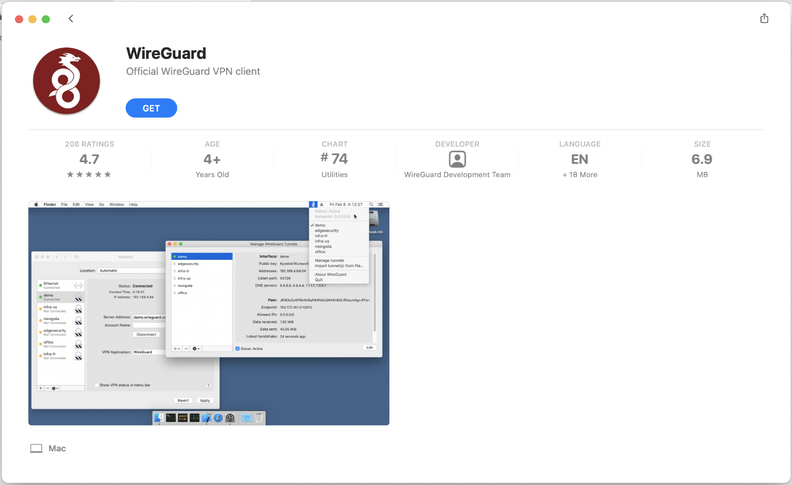
-
Set up the VPN with WireGuard
Next, we configure the VPN tunnel. This includes setting up the endpoints and exchanging the public keys.
Open the WireGuard GUI by directly clicking WireGuard icon in status bar at the top-right corner of your screen.
And then click on "Import tunnel(s) from file" menu to load your client config file.
OR,
Find and click the WireGUard GUI from your Launchpad and then either click on Add Tunnel -> Import tunnel(s) from file… or, just click on "Import tunnel(s) from file" button located at the center.
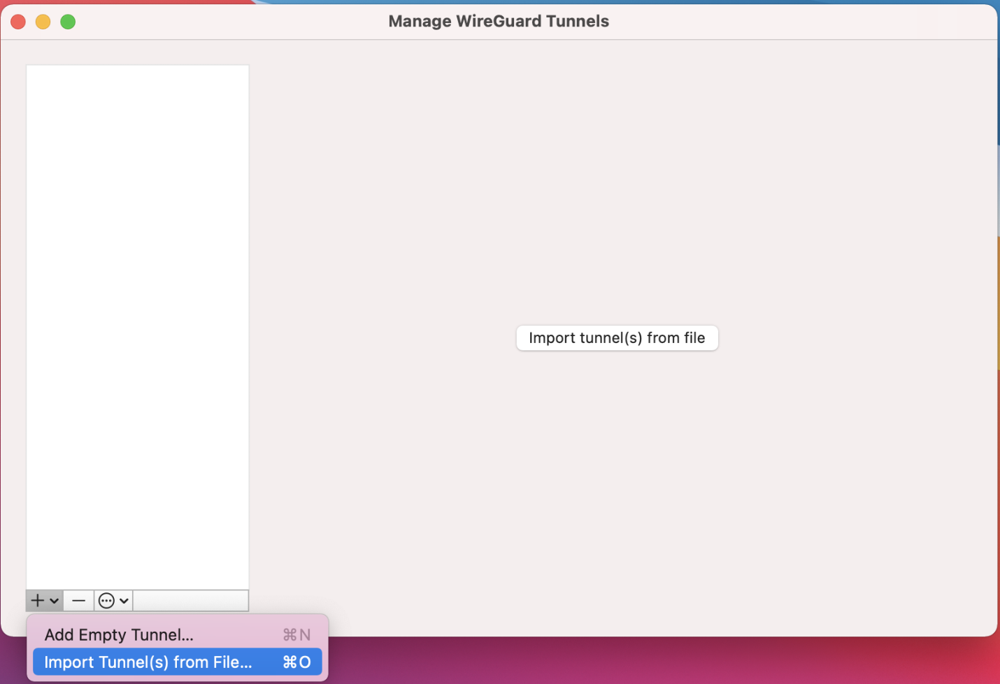
Browse to the configuration file:
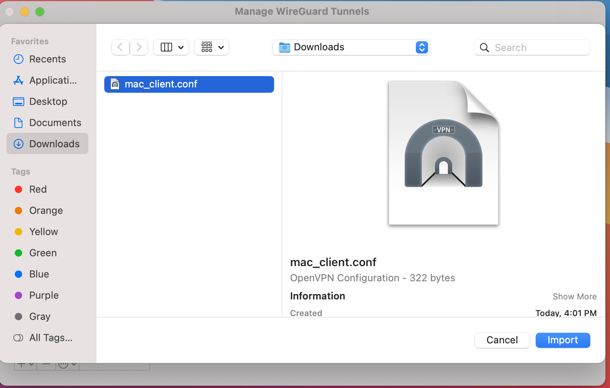
The software automatically loads the client configuration. Also, it creates a public key for this new tunnel and displays it on the screen.
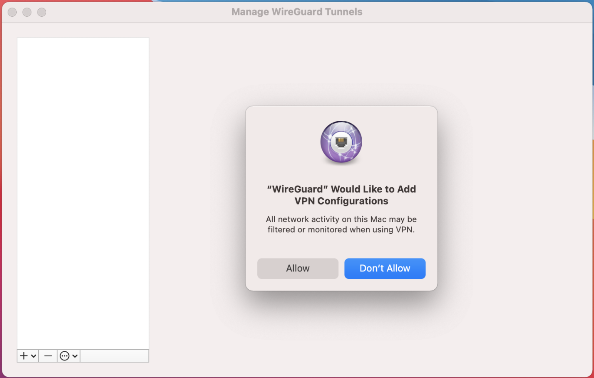
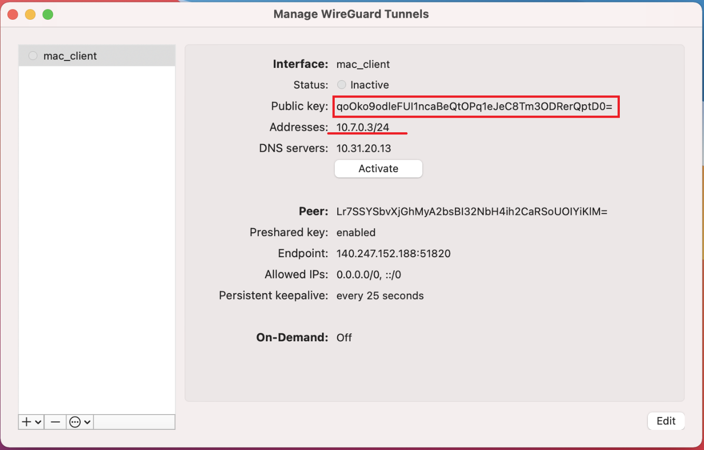
If you would like your computer to automatically connect to the WireGuard VPN server as soon as either (or both) Ethernet or Wi-Fi network adapter becomes active, check the relevant 'On-Demand' checkboxes for "Ethernet" and " Wi-Fi".
Checking Exclude private IPs will generate a list of networks which excludes the server IP address and add them to the AllowedIPs list. This setting allows you to pass all your traffic through your Wireguard VPN EXCLUDING private address ranges like 10.0.0.0/8, 172.16.0.0/12, and 192.168.0.0/16.
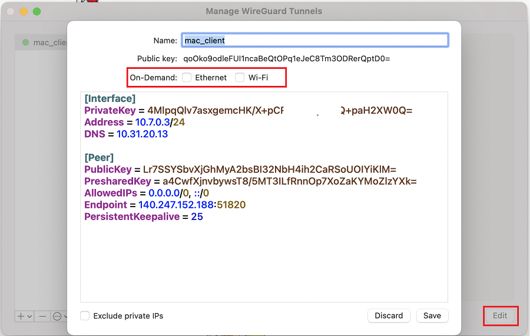
-
Test your connection
On your Windows machine, press the "Activate" button. You should see a successful connection be made:
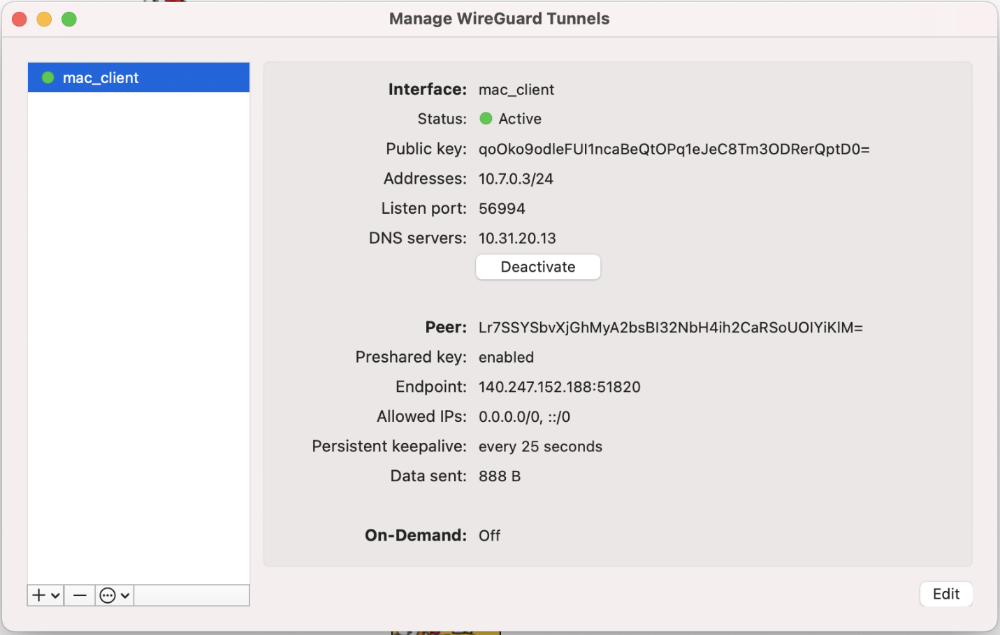
After a few seconds, the status should change to Active.
Clicking "Deactivate" button from the GUI's interface or directly clicking "Deactivate" menu from the WireGuard icon in status bar at the top-right corner of your screen closes the VPN connection.
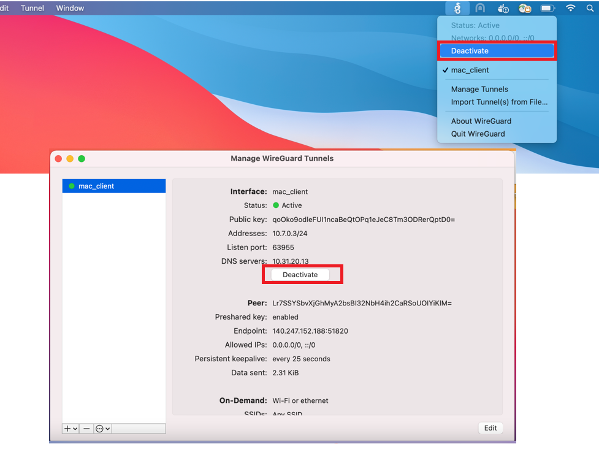
Linux
WireGuard is available through the package management system on most Linux distributions.
On Debian/Ubuntu:
sudo apt update
sudo apt-get install wireguard resolvconf -y
On RedHat/CentOS:
sudo yum install wireguard
Then, to run WireGuard using the client profile: Move the VPN client profile (configuration) file to /etc/wireguard/:
sudo mv nerc.conf /etc/wireguard/client.conf
Restart the WireGuard daemon (i.e., This will start WireGuard connection and will automatically run on boot):
sudo /etc/init.d/wireguard start
OR,
sudo systemctl enable --now wg-quick@client
sudo systemctl start wg-quick@client
OR,
wg-quick up /etc/wireguard/client.conf
Checking the status:
systemctl status wg-quick@client
Alternatively, if you want to run WireGuard manually each time, then run:
sudo wireguard --config /etc/wireguard/client.conf
OR,
sudo wireguard --config nerc.conf